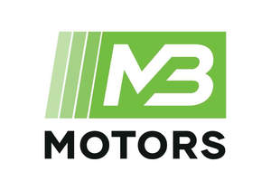

Trade Mark Journal No.2025/010 7 March 2025
UK00004163936 22 February 2025 (12,35,37,39,40,42)

- Class 12
- Motor vehicles; Motor scooters; Motor cars; Electric motors for motor cars; Motor lorries; Motor yachts; Motor buses; Buses (Motor -); Motor caravans; Motor vans; Chassis for motor vehicles; Motor vehicles (Chassis for -); Motor water vehicles; Motor coaches; Motor cycles; Motor vehicle bodies; Electrically-powered motor scooters; Coachwork for motor vehicles; Motor vehicles (Coachwork for -); Electric motor cycles; Wheels for motor vehicles; Two-wheeled motor vehicles; Passenger motor vehicles; Hydraulic circuits for motor cars; Gearboxes for motor cars; Motor cars for racing; Racing motor cars; Motor racing cars; Linear induction motor drive vehicles; Bodyworks for motor vehicles; Motor vehicle horns; Clutch mechanisms for motor cars; Brakes for motor cars; Passenger motor cars; Tyres for motor vehicles; Motor homes; Autonomous motor vehicles; Motor land vehicle engines; Motor car derived vans; Alarms for motor vehicles; Motor car windows; Torque converters for motor cars; Bodies for motor vehicles; Motor land vehicles; Land motor vehicles; Electrically powered motor vehicles; Tires for two-wheeled motor vehicles; Motor car doors; Spokes for two-wheeled motor vehicles; Tyres for motor vehicle wheels; Automatic gearboxes for motor cars; Engines for motor land vehicles; Windscreens for motor cars; Motor car seats; Automotive cam drive systems for motor vehicles; Motor drive mechanisms for land vehicles; Motor vehicles in kit form; Brake segments for motor cars; Frames of two-wheeled motor vehicles; Frames for two-wheeled motor vehicles; Brake shoes for motor cars; Horns for motor cars; Axles and cardan shaft for motor vehicles; Ski carriers for motor cars; Sliding roofs for motor vehicles.
- Class 35
- Advertising services relating to motor cars.
- Class 37
- Motor vehicle lubrication; Motor vehicle greasing; Motor vehicle rustproofing; Tuning of motor vehicle engines; Motor vehicle repair; Motor vehicle maintenance; Motor vehicle wash; Cleaning of motor vehicles; Repair of motor vehicles; Maintenance of motor vehicles; Painting of motor vehicles; Anti-rust treatment for motor vehicles; Anti-rust treatment of motor vehicles; Maintenance and repair of motor vehicle engines; Motor vehicle cleaning and polishing; Motor vehicle trim repair; Repair or maintenance of two-wheeled motor vehicles; Motor vehicle maintenance and repair; Fitting of windows in motor vehicles; Maintenance and repair of motor vehicles; Repair and maintenance of motor vehicles; Cleaning and polishing of motor vehicles.
- Class 39
- Towing of motor vehicles; Charter of motor vehicles; Motor vehicle rental; Transport of motor vehicles; Rental of motor vehicles; Hire of motor vehicles; Salvage of motor vehicles; Leasing of motor vehicles; Rental of motor cars; Hiring of motor vehicles; Motor car rental; Towing by motor vehicles; Rental of motor racing cars; Motor coach rental; Coach (Motor -) rental; Storage of parts for motor vehicles; Motor vehicle transport services; Rental of motor road vehicles; Motor vehicle recovery services; Motor car transport services.
- Class 40
- Customisation of motor vehicles.
- Class 42
- Design of motor vehicles; Design of motor vehicle parts; Design of motor racing cars; Inspection of motor vehicles [for roadworthiness].
MB MOTORS Rugeley Limited